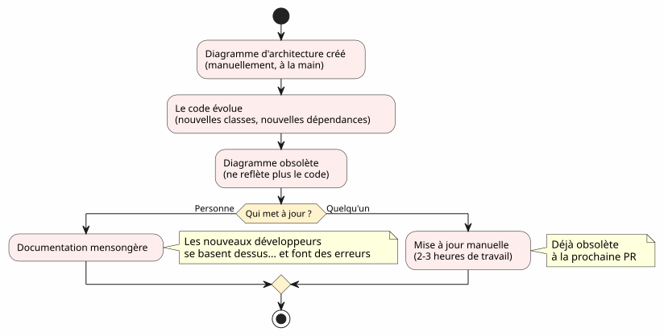
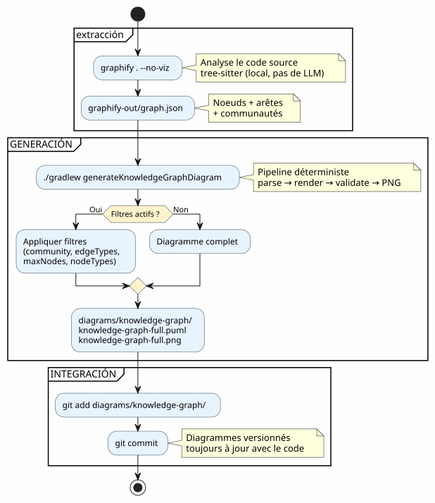
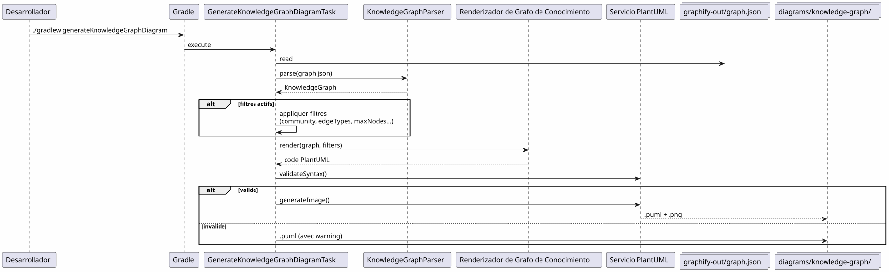

Integrar Graphify en un flujo de trabajo Gradle : del Knowledge Graph al diagrama PlantUML en un comando
Publié le 19 April 2026
- El problema: diagramas siempre atrasados respecto al código
- La solución: un pipeline determinista Knowledge Graph → PlantUML
- Paso 1: Instalar Graphify y extraer el Knowledge Graph
- Paso 2: El plugin Gradle transforma el Knowledge Graph en PlantUML
- Paso 3: Uso diario
- El pipeline completo en un workflow Gradle
- El dogfooding: el plugin se auto-documenta
- Por qué es determinista (y por qué importa)
- Diagramas del pipeline mismo
- Integración en la gobernanza del proyecto
- Puestra en marcha: lista de verificación en 5 minutos
- Trampas y mitigaciones
- Lo que se obtiene al final
- Enlaces
Tu base de código crece. Las dependencias entre módulos se multiplican. La documentación de la arquitectura se vuelve obsoleta incluso antes de ser escrita. ¿Y si tu build de Gradle pudiera automáticamente generar diagramas actualizados a partir de la estructura real del código? Eso es exactamente lo que hace el pipeline Graphify + PlantUML Gradle Plugin :`graphify . --no-viz`extrae el Knowledge Graph,`./gradlew generateKnowledgeGraphDiagram`lo convierte en diagramas PlantUML. Cero LLM, cero manual, 100% determinista.
- toc
-
[]
El problema: diagramas siempre atrasados respecto al código
Todo proyecto que supera varios miles de líneas conoce este síndrome:
-
Se dibuja un diagrama de arquitectura al inicio del proyecto
-
El código evoluciona, las dependencias cambian
-
El diagrama se convierte en una mentira decorativa
-
Nadie lo actualiza porque es tedioso
-
Los recién llegados se basan en ello y cometen errores

La pregunta no es ¿se necesitan diagramas? — todo el mundo sabe que sí. La pregunta es :¿Quién los mantiene al día?
La respuesta: nadie. A menos que sea automático.
La solución: un pipeline determinista Knowledge Graph → PlantUML
El principio es simple : en lugar de dibujar los diagramas a mano, nosotros losgenera desde la estructura real del código.
Failed to generate image: PlantUML preprocessing failed: [From <input> (line 6) ] @startuml skinparam backgroundColor #FEFEFE skinparam componentStyle rectangle actor Développeur component "Graphify ^^^^^ Syntax Error? (Assumed diagram type: sequence) @startuml skinparam backgroundColor #FEFEFE skinparam componentStyle rectangle actor Développeur component "Graphify (pip install graphifyy)" as Graphify collections "graphify-out/graph.json (Grafo del Conocimiento)" as KGJSON component "Plugin Gradle PlantUML (generateKnowledgeGraphDiagram)" as Plugin component "KnowledgeGraphParser" as Parser component "KnowledgeGraphRenderer" as Renderer component "PlantumlService (validación + renderizado PNG)" as PS collections "diagrams/knowledge-graph/\n(.puml + .png)" as Output Développeur --> Graphify : graphify . --no-viz Graphify --> KGJSON : extrait la structure\ndu code source Développeur --> Plugin : ./gradlew generateKnowledgeGraphDiagram Plugin --> Parser : parse(graph.json) Parser --> Plugin : KnowledgeGraph\n(noeuds + arêtes + communautés) Plugin --> Renderer : render(graph, filters) Renderer --> Plugin : code PlantUML\ndéterministe Plugin --> PS : validateSyntax + generateImage PS --> Output : .puml + .png note bottom of Plugin Pipeline DÉTERMINISTE Aucun appel LLM Résultat reproductible end note @enduml
Dos comandos. Eso es todo.
# Étape 1 : extraire le Knowledge Graph
graphify . --no-viz
# Étape 2 : générer les diagrammes PlantUML
./gradlew generateKnowledgeGraphDiagram¿El resultado? Archivos`.puml` et .png`en`diagrams/knowledge-graph/, versionados en Git, siempre actualizados con el código.
Paso 1: Instalar Graphify y extraer el Knowledge Graph
Instalación
Graphify es una herramienta de Python que analiza tu código base y construye un grafo de conocimientos estructurado:
# Méthode recommandée
uv tool install graphifyy && graphify install --platform opencode
# Alternative avec pip
pip install graphifyy && graphify install --platform opencodeConfigurar las exclusiones
Crear un archivo`.graphifyignore`en la raíz del proyecto para excluir los archivos que no forman parte de la lógica de negocio:
# Secrets — JAMAIS dans le graphe
*-context.yml
*.env
# Fichiers générés
build/
.gradle/
# Tests fonctionnels
src/functionalTest/Extraer el Knowledge Graph
graphify . --no-vizLa bandera`--no-viz`Salta la generación de HTML (inútil en un pipeline Gradle). El resultado es un archivo`graphify-out/graph.json`conteniendo :
-
Nudos: clases, funciones, archivos — con su tipo y comunidad
-
Aristas: relaciones entre nodos (EXTRACTED desde el código, INFERRED por el LLM)
-
Comunidades: agrupaciones automáticas de nodos vinculados
{
"nodes": [
{"id": "0", "label": "LlmService", "file_type": "code", "community": 0},
{"id": "1", "label": "ApiKeyPool", "file_type": "code", "community": 0},
{"id": "2", "label": "PlantumlService", "file_type": "code", "community": 1}
],
"links": [
{"source": "1", "target": "0", "relation": "uses", "confidence": "EXTRACTED", "weight": 0.9},
{"source": "0", "target": "2", "relation": "calls", "confidence": "INFERRED", "weight": 0.7}
]
}|
El código fuente ( |
Paso 2: El plugin Gradle transforma el Knowledge Graph en PlantUML
Arquitectura del pipeline
El plugin`com.cheroliv.plantuml`integra una tarea`generateKnowledgeGraphDiagram`que transforma`graph.json`en diagramas PlantUML de maneratotalmente determinista:

Los componentes internos
| Componente | Rol |
|---|---|
|
Parsear`graph.json`— admite 3 formatos: graphify nativo ( |
|
Transforma determinísticamente un`KnowledgeGraph`en código PlantUML. Grupos por tipo, comunidades en paquetes, leyenda automática. |
|
Tarea Gradle que orquesta: parse → render → validate → PNG. Configurable vía propiedades Gradle. |
|
Modelos de datos:`KnowledgeGraph`, |
|
Validación sintáctica + renderizado PNG (reutilizado por todas las tareas del plugin). |
Reglas de renderizado
El renderer aplica convenciones visuales deterministes:
| Tipo de arista | Notación PlantUML | Significado |
|---|---|---|
extraído |
|
Relación extraída del código fuente (certidumbre) |
DEDUCIDO |
|
Relación inferida por el LLM (puntuación de confianza) |
ambiguo |
|
Relación ambigua (por verificar) |
Las comunidades se representan como paquetes PlantUML con una paleta de colores automática.
Paso 3: Uso diario
Diagrama completo
# Générer le diagramme du Knowledge Graph complet
./gradlew generateKnowledgeGraphDiagramSortie : diagrams/knowledge-graph/knowledge-graph-full.puml + .png
Filtrar por comunidad
# Une seule communauté
./gradlew generateKnowledgeGraphDiagram \
-Pplantuml.kg.community=community_0
# Limiter le nombre de noeuds (lisibilité)
./gradlew generateKnowledgeGraphDiagram \
-Pplantuml.kg.community=community_0 \
-Pplantuml.kg.maxNodes=15Filtrar por tipo de arista
# Uniquement les relations certaines (EXTRACTED)
./gradlew generateKnowledgeGraphDiagram \
-Pplantuml.kg.edgeTypes=EXTRACTED
# Relations certaines + inférées
./gradlew generateKnowledgeGraphDiagram \
-Pplantuml.kg.edgeTypes=EXTRACTED,INFERREDFiltrar por tipo de nodo y confianza
# Uniquement les classes de code
./gradlew generateKnowledgeGraphDiagram \
-Pplantuml.kg.nodeTypes=code
# Seuil de confiance minimum (pour les INFERRED)
./gradlew generateKnowledgeGraphDiagram \
-Pplantuml.kg.minConfidence=0.7Directorio de salida personalizado
./gradlew generateKnowledgeGraphDiagram \
-Pplantuml.kg.outputDir=docs/architectureReferencia completa de las propiedades
| Propiedad | Defecto | Descripción |
|---|---|---|
|
(todas)_ |
Filtrar las comunidades por nombre (coincidencia de subcadena) |
|
(todos) |
Tipos de aristas separados por comas :`EXTRACTED`, |
|
|
Umbral mínimo de confianza para las aristas |
|
(ilimitado) |
Número máximo de nodos a mostrar |
|
(todos) |
Tipos de nodos separados por comas (ej. |
|
|
Directorio de salida para los archivos`.puml` et |
El pipeline completo en un workflow Gradle
tipo de flujo de trabajo

Integración en el ciclo de desarrollo
El pipeline se integra naturalmente en las etapas clave del desarrollo :
Failed to generate image: PlantUML preprocessing failed: [From <input> (line 6) ] @startuml skinparam backgroundColor #FEFEFE state "Desarrollo" as dev state "Extracción\ngraphify . --no-viz" as extract state "Generación ^^^^^ Syntax Error? (Assumed diagram type: state) @startuml skinparam backgroundColor #FEFEFE state "Desarrollo" as dev state "Extracción\ngraphify . --no-viz" as extract state "Generación ./gradlew generateKnowledgeGraphDiagram" as generate state "Commit diagramas versionados" as commit [*] --> dev dev --> extract : Code modifié extract --> generate : graph.json à jour generate --> commit : .puml + .png générés commit --> dev : Diagrammes dans le repo note right of extract Quasi instantané sur du code Kotlin (tree-sitter, pas de LLM) end note note right of generate Déterministe Pas de LLM Résultat reproductible end note @enduml
Actualización incremental
Cuando el código cambia, no se reconstruye todo el grafo desde cero:
# Mise à jour incrémentale (fichiers modifiés uniquement)
graphify . --update
# Puis régénérer les diagrammes
./gradlew generateKnowledgeGraphDiagram|
|
El dogfooding: el plugin se auto-documenta
El plugin PlantUML existe para transformar los prompts en diagramas. También puede transformar el Knowledge Graph de su propre codebase en diagramas de documentación. Es dogfooding : el plugin consume su propio servicio.
Failed to generate image: PlantUML preprocessing failed: [From <input> (line 6) ]
@startuml
skinparam backgroundColor #FEFEFE
skinparam componentStyle rectangle
package "Pipeline normal
(usuario → diagramas)" as normal {
^^^^^
Syntax Error? (Assumed diagram type: activity)
@startuml
skinparam backgroundColor #FEFEFE
skinparam componentStyle rectangle
package "Pipeline normal
(usuario → diagramas)" as normal {
[Fichier .prompt] as prompt
[LlmService\n+ ApiKeyPool] as llm1
[ProcessPlantumlPromptsTask] as task1
[Diagramme PNG] as out1
prompt --> task1
task1 --> llm1
llm1 --> out1
}
package "Pipeline Knowledge Graph\n(determinista, sin LLM)" as kg {
[graphify-out/graph.json] as kgjson
[KnowledgeGraphParser] as parser
[KnowledgeGraphRenderer] as renderer
[PlantumlService] as ps
[Diagramme PNG\n(documentation du plugin)] as out2
kgjson --> parser
parser --> renderer
renderer --> ps
ps --> out2
}
package "Pipeline Dogfooding
(LLM → documentación del plugin)" as dogfood {
[GraphifyPromptAdapter] as gpa
[Fichiers .prompt\nauto-générés] as auto_prompt
[LlmService\n+ ApiKeyPool] as llm2
[ProcessPlantumlPromptsTask] as task2
[Diagramme PNG\n(documentation LLM)] as out3
kgjson --> gpa
gpa --> auto_prompt
auto_prompt --> task2
task2 --> llm2
llm2 --> out3
}
note "Igual LlmService, igual ApiKeyPool,
Igual PlantumlService
— CERO duplicación" as N
@enduml
Tareas Gradle asociadas :
| Tarea | LLM ? | Descripción |
|---|---|---|
|
No |
Transforma`graph.json`en PlantUML (determinista) |
|
Sí |
genera`.prompt`desde el grafo, los trata mediante LLM (dogfooding) |
# Documentation déterministe (rapide, pas de LLM)
./gradlew generateKnowledgeGraphDiagram
# Documentation LLM (plus riche, consomme des tokens)
./gradlew generateDiagramDocsPor qué es determinista (y por qué importa)
El punto clave del pipeline`generateKnowledgeGraphDiagram`:No llama a ningún LLM. La transformación`graph.json`→ PlantUML es una función pura.
Failed to generate image: PlantUML preprocessing failed: [From <input> (line 16) ]
@startuml
skinparam backgroundColor #FEFEFE
skinparam componentStyle rectangle
rectangle "Pipeline DETERMINISTA\n(generateKnowledgeGraphDiagram)" as det {
[graph.json] as json
[KnowledgeGraphParser] as parser
[KnowledgeGraphRenderer] as renderer
[PlantUML code] as puml
json --> parser : parse
parser --> renderer : KnowledgeGraph
renderer --> puml : render (fonction pure)
}
rectangle "Pipeline LLM
^^^^^
Syntax Error? (Assumed diagram type: component)
@startuml
skinparam backgroundColor #FEFEFE
skinparam componentStyle rectangle
rectangle "Pipeline DETERMINISTA\n(generateKnowledgeGraphDiagram)" as det {
[graph.json] as json
[KnowledgeGraphParser] as parser
[KnowledgeGraphRenderer] as renderer
[PlantUML code] as puml
json --> parser : parse
parser --> renderer : KnowledgeGraph
renderer --> puml : render (fonction pure)
}
rectangle "Pipeline LLM
(processPlantumlPrompts)" as llm {
[.prompt] as prompt
[LlmService] as llmSvc
[ChatModel] as model
[PlantUML code] as puml2
prompt --> llmSvc
llmSvc --> model : API call
model --> puml2 : réponse non-déterministe
}
note bottom of det
Même entrée → même sortie
Pas de latence réseau
Pas de coût en tokens
Reproductible en CI
end note
note bottom of llm
Même entrée → sortie variable
Latence réseau (1-5s)
Coût en tokens
Nécessite une clave API
end note
@enduml
Los beneficios concretos :
| Ventaja | Impacto |
|---|---|
Reproducibilidad |
Incluso`graph.json`→ mismo diagrama. Exactamente. Cada vez. |
Costo cero |
Sin llamada LLM = sin tokens = sin factura API. |
Cero latencia |
Parse + render tarda ~100ms, no 1-5 segundos. |
Compatible con CI |
No se necesita una clave API. No hay pruebas inestables debido a una respuesta de LLM variable. |
versionable |
Le |
Diagramas del pipeline mismo
Para cerrar el bucle, aquí está el diagrama del pipeline tal como sería generado por el plugin:

Integración en la gobernanza del proyecto
En nuestro proyecto, este pipeline se integra en una estrategia de gestión de contexto EAGER/LAZY para el agente IA. El Knowledge Graph reemplaza la documentación de arquitectura manual por un grafo estructurado, consultable y autoactualizado.
Failed to generate image: PlantUML preprocessing failed: [From <input> (line 11) ]
@startuml
skinparam backgroundColor #FEFEFE
skinparam componentStyle rectangle
package "EAGER\n(siempre cargado)" as eager {
[PROMPT_REPRISE.adoc\n(contexte session)] as pr
[INDEX.adoc\n(vue d'ensemble)] as idx
[GRAPH_REPORT.adoc\n(~50 lignes)] as gr
}
package "LAZY — Estrategia
^^^^^
Syntax Error? (Assumed diagram type: component)
@startuml
skinparam backgroundColor #FEFEFE
skinparam componentStyle rectangle
package "EAGER\n(siempre cargado)" as eager {
[PROMPT_REPRISE.adoc\n(contexte session)] as pr
[INDEX.adoc\n(vue d'ensemble)] as idx
[GRAPH_REPORT.adoc\n(~50 lignes)] as gr
}
package "LAZY — Estrategia
(a petición)" as lazy_strat {
[Méthodologies] as meth
[Archives sessions] as sessions
}
package "LAZY — Graphify\n(consultas dirigidas)" as lazy_graph {
[graph.json] as gj
[Queries\n(query/path/explain)] as queries
}
package "Pipeline PlantUML\n(auto-generado)" as puml {
[generateKnowledgeGraphDiagram] as kgTask
[generateDiagramDocs] as ddTask
[Diagrammes PNG] as diagrams
}
Agent --> eager : Lit en début de session
Agent ..> lazy_strat : Charge si type détecté
Agent ..> lazy_graph : Query si besoin structurel
kgTask --> diagrams : Déterministe
ddTask --> diagrams : Via LLM
note right of gr
Condensé du Knowledge Graph
God nodes + communautés
Remplace ECOSYSTEM_OVERVIEW
(225 lignes → 50 lignes)
end note
@enduml
El matrimonio de los dos sistemas es complementario:
-
La estrategia gestiona el CUÁNDO y el CÓMO— gobernanza, flujo de trabajo, archivo
-
Graphify gestiona el QUOI y el OÙ— estructura del código, relaciones, consultas específicas
__ La estrategia de sesión gestiona elCUANDO et le CÓMO(gouvernance, workflow, seuils), Graphify gestiona elQUÉ et le dónde(estructura del código, relaciones, consultas dirigidas). El pipeline PlantUML gestiona elCON QUÉ(diagramas deterministas, versionados, siempre actualizados) (Empty)
Puestra en marcha: lista de verificación en 5 minutos
| (No output, as the text to translate is empty) | Etapa | Pedido |
|---|---|---|
1 |
Instalar Graphify |
|
2 |
Configurar las exclusiones |
Crear`.graphifyignore` |
3 |
Extraer el Knowledge Graph |
|
4 |
Generar los diagramas |
|
5 |
Committer los resultados |
|
# Script complet en 5 commandes
uv tool install graphifyy
cat > .graphifyignore << 'EOF'
*-context.yml
*.env
build/
.gradle/
EOF
graphify . --no-viz
./gradlew generateKnowledgeGraphDiagram
git add graphify-out/GRAPH_REPORT.adoc graphify-out/graph.json diagrams/knowledge-graph/Trampas y mitigaciones
| Trampa | Descripción | Mitigación |
|---|---|---|
Grafo muy denso |
Un proyecto grande genera cientos de nodos ilegibles |
usar`-Pplantuml.kg.maxNodes=30`y filtrar por comunidad |
Exclusiones demasiado amplias |
Demasiados archivos en`.graphifyignore`reduce el valor del grafo |
Comenzar por excluir solo credentials y build |
Dirección de las flechas |
Las aristas INFERRED pueden tener una dirección ambigua |
Filtrar por`-Pplantuml.kg.edgeTypes=EXTRACTED`para las relaciones ciertas únicamente |
Grafo obsoleto |
El código cambia pero el grafo no se reconstruye |
Utilizar`graphify . --update`régulièrement o el hook git`graphify hook install` |
Costo actualizado |
Las actualizaciones incrementales son casi gratuitas (tree-sitter local) |
Sólo las docs ( |
Lo que se obtiene al final
Failed to generate image: PlantUML preprocessing failed: [From <input> (line 10) ]
@startuml
skinparam backgroundColor #FEFEFE
rectangle "ANTES" as avant {
card "Diagramas dibujados a mano\nSiempre obsoletos\nNadie los actualiza" as av1 #FDEDEC
}
rectangle "Después" as apres {
card "Diagramas generados automáticamente
Siempre actualizado con el código
^^^^^
Syntax Error? (Assumed diagram type: activity)
@startuml
skinparam backgroundColor #FEFEFE
rectangle "ANTES" as avant {
card "Diagramas dibujados a mano\nSiempre obsoletos\nNadie los actualiza" as av1 #FDEDEC
}
rectangle "Después" as apres {
card "Diagramas generados automáticamente
Siempre actualizado con el código
Versionados en Git
Deterministas y reproducibles" as ap1 #E8F8E8
}
avant --> apres : graphify . --no-viz\n+ ./gradlew generateKnowledgeGraphDiagram
@enduml
Los beneficios concretos :
| Beneficio | Detalle |
|---|---|
Documentación siempre actualizada |
Los diagramas reflejan el código actual, no una instantánea manual |
Cero esfuerzo de mantenimiento |
Los diagramas se regeneran en cada build |
Reducción de la deuda técnica |
No es necesario mantener los diagramas a mano |
Contexto visual para los nuevos |
Un nuevo desarrollador entiende la arquitectura mirando los diagramas |
ajuste fino potencial |
Los pares (subgrafo → diagrama) son ejemplos de entrenamiento de IA |
Validación automática |
`PlantumlService.validateSyntax()`verifica cada diagrama generado |
Onboarding rápido |
5 diagramas = vista completa de la arquitectura |
_ El que tiene un _por qué puede soportar todos los cómo. __
El por qué: diagramas siempre actualizados. El cómo: dos comandos en un pipeline Gradle.
Enlaces
-
Los mejores trucos del comando fg— artículo anterior sobre el flujo de trabajo del terminal